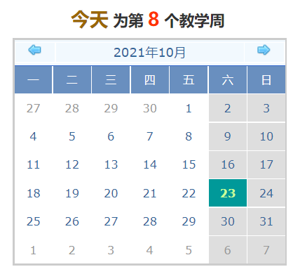

| 教务快讯 |  |
| 学校组织召开“十四五”规划教务处专题座谈会 2021-09-28 | |
| 我校参加2021年四川省高校一流本科专业建设培训会 2021-09-27 | |
| 学校召开2021—2022学年第一学期第一次教学办公会 2021-09-10 | |
| 教务实验党支部组织开展党史党章知识竞赛 2021-07-09 | |
| 教务实验支部组织开展党史教育专题党课 2021-07-09 |
| 通知公告 | |
| 关于2021—2022学年第一学期教材费结算的通知 2021-10-21 | |
| 关于报送2022年工程教育专业认证申请书的通知 2021-09-27 | |
| 关于召开公共课教学改革专题研讨会的通知 2021-10-11 | |
| 关于2021年秋季学期结业证换发毕业证的通知 2021-10-09 | |
| 关于报送高校基层教学组织建设相关材料的通知 2021-09-23 |
（文：陈婵 图：刘皓）9月27日上午，学校在行政楼305会议室召开“十四五”规划教务处专题座谈会。校党委书记刘强出席会议并讲话。校党委常委、副校长王小军、学校办公室负责人、发展规划处班子成员、教务处班子成员及科室负责人参加会议。会议由发规处处长桂世权主持。

校党委书记刘强指出在《成都大学“十四五”人才培养规划》编制过程中，要做到“跳出成大看成大，跳出教育看教育”，谋深谋准我校人才培养的发展目标、主要任务和特色亮点，规划要具备较强的可行性。同时，提出三点要求：一是勇担主责，教务处作为学校核心处室之一，承担人才培养、教育教学改革之重任，应形成纵向到底的教学组织体系，完善管理运行机制；二是深化主题，坚持“高质量”主题，以提升人才培养质量为导向，进一步提高升学率，提高毕业生的就业质量；三是牢抓主线，始终牢牢抓住教育教学改革主线，为人才培养添动力，提供坚强保障。
教务处处长叶安胜以《深化教育教学改革，高标准培养一流应用型人才》为题详细汇报了十四五期间成都大学人才培养的总体目标和包括生源提升、专业建设、课程建设、课程思政、课堂改革、实践育人、协同育人、拔尖人才、质量保障在内的九大重点建设工程。
教务处副处长彭长宇就招生工作、2021级新生生源质量情况等进行了汇报；教务处副处长张洪就实践教学基地建设、实习实训改革、教学运行等工作进行了汇报；教务处副处长刘茜就一流专业建设、教育教学改革推进情况等进行了汇报。
教务处综合信息科、教学建设科、教学评估科、实践教学科、学籍学位科、教学运行科、教材科、招生考试科、张澜学院的科室负责人详细汇报了各自分管的业务，既分析现存问题，也提出解决思路。
（编辑：刘茜 责编：叶安胜）